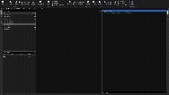
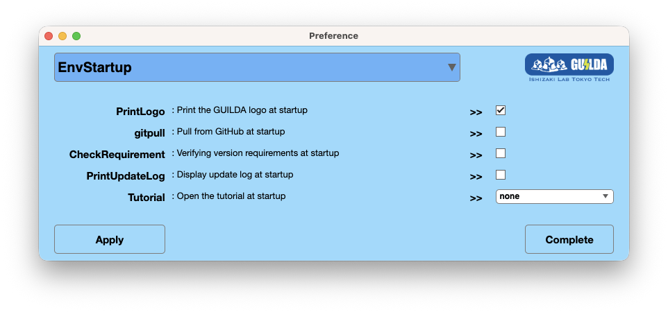

GUILDA
Grid & Utility Infrastructure Linkage Dynamics Analyzer
Install Now
About GUILDA

GUILDA (Grid & Utility Infrastructure Linkage Dynamics Analyzer) is a numerical simulator for smart energy management, developed primarily by our laboratory in collaboration with Assistant Professor Takahiro Kawaguchi (Gunma University).
Its goal is to provide an advanced simulation environment that students and researchers in systems and control can use with only minimal background knowledge of power systems.
Supported Analyses
- RMS Analysis: Phasor models, three-phase balanced systems.
- Time-Domain Simulation: Initial value perturbations, load variations, input adjustments, ground faults, and controller design.
- Linearization: Derivation of approximate linear models, Hessian calculations of energy functions.
- Optimal Power Flow (OPF): General formulation of OPF problems.
- Graph Plotting: Animation generation using coupled oscillator systems.
Update Log
Related Book
GUILDA is closely linked with the textbook "Systems Control Engineering of Power Systems - System Mathematics and MATLAB Simulation -" (Published in November 2022), which explains related concepts in the language of systems and control.
Introductory Article (Japanese)
License
GUILDA is released under the MIT License. For more details, please refer to the
LICENSE file located in the root directory of the repository.
Getting Started
Install Now
Requirements
GUILDA runs on MATLAB and requires the following products:
- MATLAB
- Control System Toolbox
- Symbolic Math Toolbox
- Optimization Toolbox
Start GUILDA
Open the GUILDA repository folder in MATLAB and run the constructor at the beginning of a session.
>> GUILDA;The constructor prepares the environment by performing the configured startup tasks:
- Print the GUILDA logo.
- Pull the latest revision when Git update is enabled.
- Add the required GUILDA folders to the MATLAB path. This step is always performed.
- Check the required MATLAB products.
- Update the generated documentation database and class signature map when enabled.
- Display the update log and open the tutorial when enabled.
Startup Settings
Use the settings window to enable or disable optional startup tasks. Path setup cannot be disabled because it is required to use GUILDA.
>> GUILDA.setting();
Utility Functions
>> GUILDA.pwd() % Get the GUILDA repository path
>> GUILDA.rmpath() % Remove GUILDA folders from the MATLAB path
>> GUILDA.addpath() % Add the required folders again
>> GUILDA.gitpull() % Pull the latest revision from GitHub
>> GUILDA.setting() % Open environment and startup settings
>> GUILDA.tutorial() % Open the tutorial
>> GUILDA.doc() % Open this documentation
>> GUILDA.dictionary() % Search the implemented class hierarchy
>> GUILDA.newclass() % Open the class creation tool (under development)Managed GUILDA Folders
The following folders under @GUILDA are managed by GUILDA and should not be edited directly:
| Folder | Purpose |
|---|---|
@GUILDA/private | Internal functions used by GUILDA class methods. |
@GUILDA/config | Configuration values used during startup and internal analyses. |
@GUILDA/user | User settings and tags associated with instantiated objects. |
Basic Workflow
A typical GUILDA analysis proceeds from environment setup and network construction to operating-point initialization, followed by simulation, linearization, or controller evaluation. The examples below follow the verification flow in +DebugScript and use the current API names.
For users who want to learn through hands-on experience, please refer to the Hands-on Tutorial section below.
1. Prepare the Environment
Run GUILDA once per MATLAB session. The constructor adds the required folders and performs the enabled startup checks.
>> GUILDA;2. Build or Load a Network
For a quick analysis, load one of the packaged networks. To build a model manually, create a PowerNetwork and add buses, branches, and components in that order.
% Load a packaged test network
net = network.IEEE14bus;
% Minimal structure of a manually assembled network
net = PowerNetwork("TestSystem");
net.add_bus();
net.add_bus();
net.add_branch("pi", [1, 2]);
net.a_Bus{1}.add_component("gen-park");
net.a_Bus{2}.add_component("load-power");3. Set and Initialize the Operating Point
Set the power-flow parameters on buses and components, inspect the power-flow solution when needed, and then initialize the model. Initialization distributes the equilibrium voltage, current, active power, and reactive power to each object.
% Example power-flow settings
net.a_Bus{1}.tab_parameter.powerflow{:, ["V", "Varg"]} = [1.05, 0.00];
net.a_Bus{1}.a_Component{1}.tab_parameter.powerflow{:, ["P", "Q"]} = [nan, nan];
powerflow = net.calculate_powerflow();
net.initialize();4. Run a Time-Domain Simulation
Use odeEventSet to describe disturbances. Events can represent state offsets, input changes, bus faults, and unit trips.
net = network.IEEE14bus;
fault = odeEventSet("fault", net, ...
"FaultBus", "B008", ...
"TimeSpan", [3, 3.1]);
sol = net.simulate([0, 50], fault);
xsol = sol.odeResults;
figure;
hold on;
arrayfun(@(i) plot(xsol.t, xsol.Bus(i).Component(1).X.omega), [1, 2, 3, 6, 8]);5. Obtain a Linear Model
After initialization, obtain the linearized interconnected model. Buses without dynamic units can be specified with the NonUnit option.
net = network.IEEE14bus;
net.initialize();
sys = net.get_sys();
sysReduced = net.get_sys("NonUnit", 7);
eig(sys.A)6. Add and Evaluate Controllers
Local controllers are attached to components; global controllers are attached to the network. Reinitialize the network after changing its controller structure, then repeat the simulation or linearization.
avr = controller.avr.AVR_ST1("avr1");
pss = controller.pss.PSS1("pss1");
net.a_Bus{1}.a_Component{1}.add_local_controller(avr, pss);
net.initialize();
fault = odeEventSet("fault", net, "FaultBus", "B008", "TimeSpan", [3, 3.01]);
sol = net.simulate([0, 50], fault);Hands-on Tutorial for GUILDA
Tutorials in Live Script format, which explain how to implement various analyses, are provided in the _GUILDAtutorial folder of the source files.
Abstract
Class Reference
The class reference has not been generated yet.
Run GUILDA.doc in MATLAB. It builds _GUILDAdoc/database from the source code and opens this page again.
Core Components of the System Model
In GUILDA, the system model is primarily constructed using the following elements. The PowerNetwork class acts as a container, and by setting other classes within it, the system model is completed and ready for analysis.
Class Diagram
The has-a relationships of each component class are shown in the class diagram below.
- a_Bus : Bus [0..*]
- a_Branch : Branch [0..*]
- a_GlobalController : GlobalController [0..*]
- a_Component : Component [0..*]
- a_LocalController : LocalController [0..*]
Inherited Classes
The first column shows the inheritance hierarchy generated from each class's Parent metadata. Select a category to focus on one subtree, or select a class name to open its reference page.
Auxiliary Classes
Although these classes do not directly correspond to the physical components of the power system model, they are essential for various analyses and data management within GUILDA. Base classes shared by both trees (such as LayerPackage) are listed here too. The search box and the filter above apply to this table as well.
For Developer
Guides for contributors and maintainers of GUILDA. Select a topic to open its dedicated page.